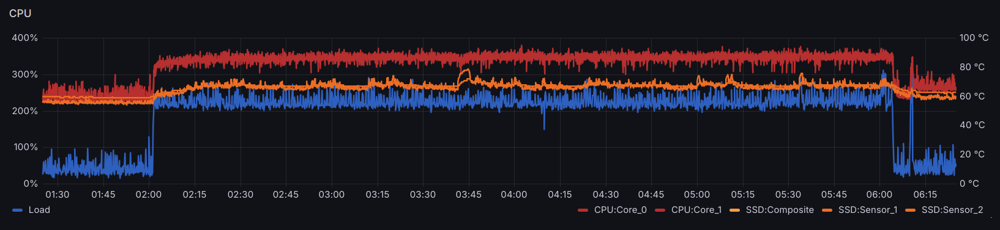
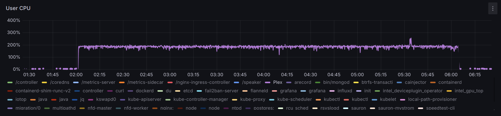
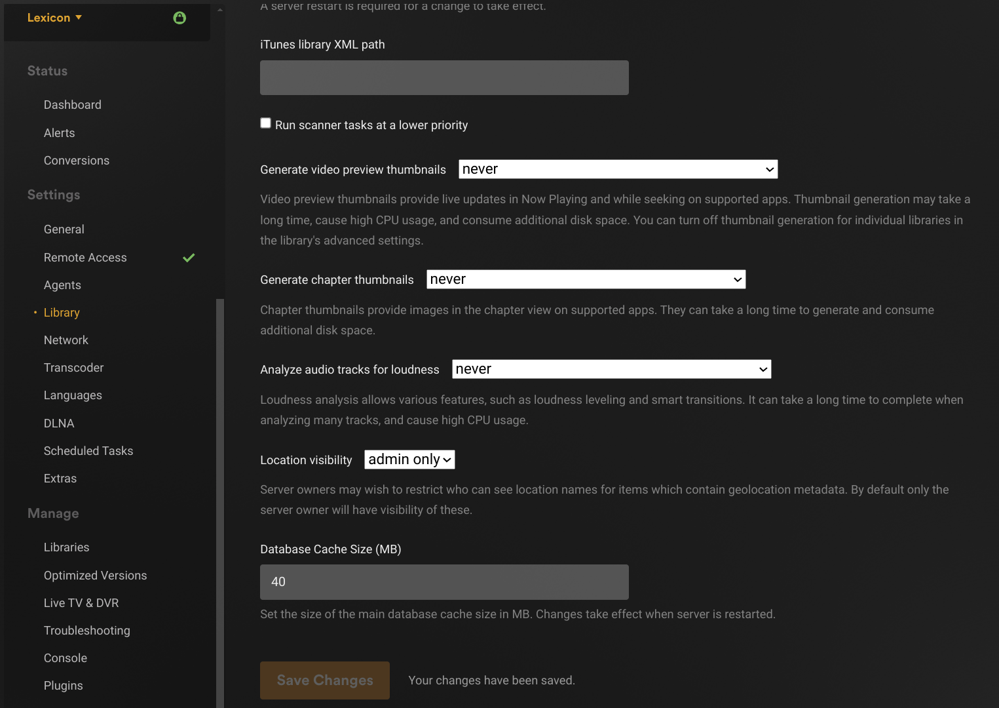
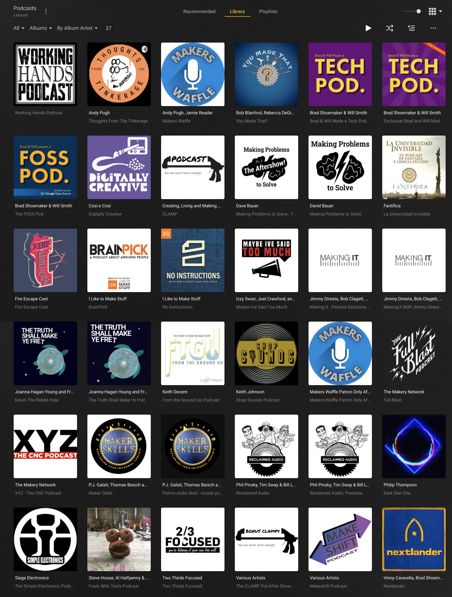

Migrating a Plex Media Server to Kubernetes
Running Plex Media Server on Linux is easy. Updating it is easy too. Re-using the library from an old server on a new one is also quite easy.
That said, running anything in Kubernetes is only slightly harder once, and after that updates are entirely automatic and moving from one cluster to another would be even easier.
Prologue
I’ve been using Plex Media Server for a few years, primarily to catch up with a bunch of podcasts I started listening from their beginning in the spring of 2020, and occasionally to share my Audible library with the family. The family doesn’t really use any of this, specially since they got Spotify, but this library of Podcasts has been a faithful companion of mine for the last few years, at home and abroad.
The Kubernetes cluster running on Lexicon has proven stable and convenient enough that I finally felt motivated to migrate the Plex Media Server, from the stand-alone setup into the Kubernetes cluster.
Kubernetes
Plex offers their official Docker image (plexinc/pms-docker) but somehow the better documentation, in Reddit and blog posts, seems to converge on the linuxserver/plex image from the LinuxServer.io team. For the most part, I followed Kubernetes Part 14: Deploy Plexserver from debontonline.com, except instead of NFS shares I used local paths where the data is already present. For that, I took inspiration from Greg Jeanmarts’ article (K3S – 5/8) Self-host your Media Center On Kubernetes with Plex, Sonarr, Radarr, Transmission and Jackett.
I like to keep my Kubernetes deployments each in a single file, so this one is a bit long. The sections are in the order introduced by Kubernetes Part 14: Deploy Plexserver:
- Two
PersistentVolumes for the data (media) and config (library). - Two
PersistentVolumeClaims for these. - A
Deploymentto run the Plex image using the above storage volumes. - Two
Services to expose TCP and UDP on the same ports. - No
Ingressbecause I had no long-term need to access this Plex server directly. Having already configured similar Plex servers (e.g. on a Raspberry Pi), once the new server is claimed it will show up along with others at app.plex.tv.
Notes about highlighted lines:
14,49:1Gimay seem excessive for the/configdirectory, but with a large collection comes a large database under this directory.19: Local storage for Kubernetes pods goes under/home/k8s(root partition is small, no separate/varpartition).34: Local storage for audio files goes under/home/depot(including symlinks for a few folder in a SSD).49: Local storage for video files goes under/home/ssd.29,44,79,94:500Gimay seem even more excessive, but this is not much more than the storage space taken by my collections already.- 124 GB are taken by my Audible library (about 350 books).
- 320 GB are taken by the Podcasts I’ve downloaded, most of which I treasure.
132: the token obtained from plex.tv/claim ─ expires in just 4 minutes.134,136: the old Plex server was running as user plex and998was the UID and GID assigned to it.223,252: this IP address comes from the range of reserved when installing MetallLB and should be the same on both services (TCP and UDP).
apiVersion: v1
kind: Namespace
metadata:
name: plexserver
---
apiVersion: v1
kind: PersistentVolume
metadata:
name: plexserver-pv-config
namespace: plexserver
spec:
storageClassName: manual
capacity:
storage: 1Gi
accessModes:
- ReadWriteOnce
persistentVolumeReclaimPolicy: Retain
hostPath:
path: /home/k8s/plexmediaserver
---
apiVersion: v1
kind: PersistentVolume
metadata:
name: plexserver-pv-data-depot
namespace: plexserver
spec:
storageClassName: manual
capacity:
storage: 500Gi
accessModes:
- ReadWriteOnce
persistentVolumeReclaimPolicy: Retain
hostPath:
path: /home/depot
---
apiVersion: v1
kind: PersistentVolume
metadata:
name: plexserver-pv-data-video
namespace: plexserver
spec:
storageClassName: manual
capacity:
storage: 500Gi
accessModes:
- ReadWriteOnce
persistentVolumeReclaimPolicy: Retain
hostPath:
path: /home/ssd/video
---
apiVersion: v1
kind: PersistentVolumeClaim
metadata:
name: plexserver-pvc-config
namespace: plexserver
spec:
storageClassName: manual
volumeName: plexserver-pv-config
accessModes:
- ReadWriteOnce
volumeMode: Filesystem
resources:
requests:
storage: 1Gi
---
apiVersion: v1
kind: PersistentVolumeClaim
metadata:
name: plexserver-pvc-data-depot
namespace: plexserver
spec:
storageClassName: manual
volumeName: plexserver-pv-data-depot
accessModes:
- ReadWriteOnce
volumeMode: Filesystem
resources:
requests:
storage: 500Gi
---
apiVersion: v1
kind: PersistentVolumeClaim
metadata:
name: plexserver-pvc-data-video
namespace: plexserver
spec:
storageClassName: manual
volumeName: plexserver-pv-data-video
accessModes:
- ReadWriteOnce
volumeMode: Filesystem
resources:
requests:
storage: 500Gi
---
apiVersion: apps/v1
kind: Deployment
metadata:
labels:
app: plexserver
name: plexserver
namespace: plexserver
spec:
replicas: 1
revisionHistoryLimit: 0
selector:
matchLabels:
app: plexserver
strategy:
rollingUpdate:
maxSurge: 0
maxUnavailable: 1
type: RollingUpdate
template:
metadata:
labels:
app: plexserver
spec:
volumes:
- name: plex-config
persistentVolumeClaim:
claimName: plexserver-pvc-config
- name: data-depot
persistentVolumeClaim:
claimName: plexserver-pvc-data-depot
- name: data-video
persistentVolumeClaim:
claimName: plexserver-pvc-data-video
containers:
- env:
- name: PLEX_CLAIM
value: claim-deDSmtULWyYbvwt_2xAu
- name: PGID
value: "998"
- name: PUID
value: "998"
- name: VERSION
value: latest
- name: TZ
value: Europe/Amsterdam
image: ghcr.io/linuxserver/plex
imagePullPolicy: Always
name: plexserver
ports:
- containerPort: 32400
name: pms-web
protocol: TCP
- containerPort: 32469
name: dlna-tcp
protocol: TCP
- containerPort: 1900
name: dlna-udp
protocol: UDP
- containerPort: 3005
name: plex-companion
protocol: TCP
- containerPort: 5353
name: discovery-udp
protocol: UDP
- containerPort: 8324
name: plex-roku
protocol: TCP
- containerPort: 32410
name: gdm-32410
protocol: UDP
- containerPort: 32412
name: gdm-32412
protocol: UDP
- containerPort: 32413
name: gdm-32413
protocol: UDP
- containerPort: 32414
name: gdm-32414
protocol: UDP
resources: {}
stdin: true
tty: true
volumeMounts:
- mountPath: /config
name: plex-config
- mountPath: /home/depot
name: data-depot
- mountPath: /home/ssd/video
name: data-video
restartPolicy: Always
---
kind: Service
apiVersion: v1
metadata:
name: plex-udp
namespace: plexserver
annotations:
metallb.universe.tf/allow-shared-ip: plexserver
spec:
selector:
app: plexserver
ports:
- port: 1900
targetPort: 1900
name: dlna-udp
protocol: UDP
- port: 5353
targetPort: 5353
name: discovery-udp
protocol: UDP
- port: 32410
targetPort: 32410
name: gdm-32410
protocol: UDP
- port: 32412
targetPort: 32412
name: gdm-32412
protocol: UDP
- port: 32413
targetPort: 32413
name: gdm-32413
protocol: UDP
- port: 32414
targetPort: 32414
name: gdm-32414
protocol: UDP
type: LoadBalancer
loadBalancerIP: 192.168.0.128 # Should be one from the MetalLB range and the same as the TCP service.
---
kind: Service
apiVersion: v1
metadata:
name: plex-tcp
namespace: plexserver
annotations:
metallb.universe.tf/allow-shared-ip: plexserver
spec:
selector:
app: plexserver
ports:
- port: 32400
targetPort: 32400
name: pms-web
protocol: TCP
- port: 3005
targetPort: 3005
name: plex-companion
- port: 8324
name: plex-roku
targetPort: 8324
protocol: TCP
- port: 32469
targetPort: 32469
name: dlna-tcp
protocol: TCP
type: LoadBalancer
loadBalancerIP: 192.168.0.128 # Should be one from the MetalLB range and the same as the UDP service.
Having saved the above as plex-media-server.yaml
all is left to do now is apply it:
$ kubectl apply -f plex-media-server.yaml
namespace/plexserver created
persistentvolume/plexserver-pv-config created
persistentvolume/plexserver-pv-data-depot created
persistentvolume/plexserver-pv-data-video created
persistentvolumeclaim/plexserver-pvc-config created
persistentvolumeclaim/plexserver-pvc-data-depot created
persistentvolumeclaim/plexserver-pvc-data-video created
deployment.apps/plexserver created
service/plex-udp created
service/plex-tcp created
After about a minute the pod finds the PersistentVolumeClaims and Plex is ready at
192.168.0.128:32400/web
(LAN only, no SSL).
When accessing the new server’s web interface for the first time, log in and create a test library with a small body of media, just to confirm that Plex is able to scan the files. If there is no previous Plex server, this is already a good time to let it scan the entire media collection.
Addition (that didn’t work)
GPU in this server isn’t big and video transcoding is not actually necessary, since this server is used almost exclusively for audio, but I tried following Plex on Kubernetes with intel iGPU passthrough – Small how to anyway to see how it’d go. It didn’t.
First, I didn’t even try tagging the server (single node) with the
label intel.feature.node.kubernetes.io/gpu=true ─ this may have
prevented pods from finding the GPU but I suspect something else did.
Installing a certificate manager should not be necessary, because
it’s already installed.
intel/intel-device-plugins-for-kubernetes requires NFD (Node Feature Discovery) for the Device Plugin operator, then the operator and GPU can be installed with their respective helm charts:
Installing all these through the Helm charts should be quite easy:
$ helm repo add nfd https://kubernetes-sigs.github.io/node-feature-discovery/charts
$ helm repo add intel https://intel.github.io/helm-charts/
$ helm repo update
$ helm install nfd nfd/node-feature-discovery \
--namespace node-feature-discovery --create-namespace --version 0.12.1 \
--set 'master.extraLabelNs={gpu.intel.com,sgx.intel.com}' \
--set 'master.resourceLabels={gpu.intel.com/millicores,gpu.intel.com/memory.max,gpu.intel.com/tiles,sgx.intel.com/epc}'
NAME: nfd
LAST DEPLOYED: Fri Sep 15 05:30:14 2023
NAMESPACE: node-feature-discovery
STATUS: deployed
REVISION: 1
TEST SUITE: None
$ helm install device-plugin-operator intel/intel-device-plugins-operator
NAME: device-plugin-operator
LAST DEPLOYED: Fri Sep 15 05:31:28 2023
NAMESPACE: default
STATUS: deployed
REVISION: 1
TEST SUITE: None
NOTES:
Thank you for installing intel-device-plugins-operator.
The next step would be to install the device (plugin) specific chart.
$ helm install gpu-device-plugin intel/intel-device-plugins-gpu
NAME: gpu-device-plugin
LAST DEPLOYED: Fri Sep 15 05:32:11 2023
NAMESPACE: default
STATUS: deployed
REVISION: 1
TEST SUITE: None
$ helm show values intel/intel-device-plugins-operator
manager:
image:
hub: intel
tag: ""
pullPolicy: IfNotPresent
kubeRbacProxy:
image:
hub: gcr.io
hubRepo: kubebuilder
tag: v0.14.1
pullPolicy: IfNotPresent
privateRegistry:
registryUrl: ""
registryUser: ""
registrySecret: ""
$ helm show values intel/intel-device-plugins-gpu
name: gpudeviceplugin-sample
image:
hub: intel
tag: ""
initImage:
hub: intel
tag: ""
sharedDevNum: 1
logLevel: 2
resourceManager: false
enableMonitoring: true
allocationPolicy: "none"
nodeSelector:
intel.feature.node.kubernetes.io/gpu: 'true'
nodeFeatureRule: false
I’m not sure what is missing. Attempting to assign the GPU to Plex by
adding the following lines to plex-media-server.yaml did not work:
Made the deployment fail with because the GPU was not available:
0/1 nodes are available: 1 Insufficient gpu.intel.com/i915. preemption: 0/1 nodes are available: 1 No preemption victims found for incoming pod.
Alternative (that didn’t work)
There are also Helm charts, at least 2:
- munnerz/kube-plex which seems to be simpler
- ressu/kube-plex which is a fork of munnerz/kube-plex
I tried munnerz/kube-plex only; it didn’t work.
In all honestly, I didn’t really try hard, and didn’t quite see the motivation to use Helm charts instead a regular deployment (as seen above).
Installing the chart was supposed to be this easy:
$ helm install plex ./charts/kube-plex \
--create-namespace \
--namespace plex \
--set claimToken=claim-VqczS1yENc_F8J7zitZo
NAME: plex
LAST DEPLOYED: Wed Sep 13 22:40:48 2023
NAMESPACE: plex
STATUS: deployed
REVISION: 3
TEST SUITE: None
NOTES:
1. Get the application URL by running these commands:
export POD_NAME=$(kubectl get pods --namespace plex -l "app=kube-plex,release=plex" -o jsonpath="{.items[0].metadata.name}")
echo "Visit http://127.0.0.1:8080 to use your application"
kubectl port-forward $POD_NAME 8080:
However, this is resulted in the pod being stuck waiting for a volume to be created, either by external provisioner “rancher.io/local-path” or manually created by system administrator.
With no great motivation to get this to work, I decided to uninstall the chart and study the deployment options more closely to get one to work (as seen above).
Migration
With both Plex servers working, albeit with only a small test library in the new one, the next goal is to migrate the whole database from the old stand-alone Plex server to the new one running in Kubernetes. The path to each server’s database is
/home/depot/plexmediaserver/Libraryfor the old stand-alone server./home/k8s/plexmediaserver/Libraryfor the new server in Kubernetes.
The plan is simple: stop both servers, move the new database away, copy the old one as the new one, start the new server only.
$ kubectl delete -f plex/plex-media-server.yaml
# systemctl stop plexmediaserver.service
# cd /home/k8s/plexmediaserver
# mv Library Library.backup
# cp -a /home/depot/plexmediaserver/Library .
Note: most Plex deployments mount the media a generic path
(/data). If that had been the case above, the new server would not
recognize the files as already scanned, since the library would only
refer to files under the old path (/home/depot). If this was the
case, it would be enough to update the mountPath value in line 148
in plex-media-server.yaml
In addition to that, my deployment creates 2 separate
PhysicalVolumes (and claims) because video files are
in a separate disk:
Port forwarding
Normally Plex is able to establish the necessary port forwarding via UPnP, but in this case that doesn't seem to work. This may be because it's not the only Plex server in the nework, so because it's running in a Kubernetes cluster. Either way, the port forwarding rule can be added manually to the router and then Manually specify public port in the Plex settings under Settings > Remote Access.
Note: this step may require connecting directly to the web interface from the local network: 192.168.0.128:32400/web
Scheduled Tasks
Normally Plex runs daily maintenance during the night, which is a good time. However, given the limited CPU in this server, even letting it run for 4 hours every day results in the CPU running quite hot for all that time:


To get rid of this, I went to Settings > Server > Library to update Plex Library Settings and disable these which I don't really need, by setting their frequency to never:
- Generate chapter thumbnails seems relevant only for TV series, which I don't use (or care about).
- Analyze audio tracks for loudness is clearly called out as potentially CPU-intensive, and I don't think is useful for podcasts, where each episode is a single track, and most of the times one listens to a single one per "album". Even if this could be useful for audiobooks, it shouldn't be necessary given the rather high quality of their audio.

Epilogue
The migration had two critical requirements:
- Not re-scanning the library again. Although I take care to make sure podcasts episodes have good ID3 v2 tags, adjusting them if necessary, Plex does not seem to understand them all that well all the time, often leading to a single podcast being split in 2 or 3 albums, authors showing as “Various Artists” despite correct ID3 tags, and a few other oddities. I spent time adjusting metadata in Plex and would hate to lose that work.
- Preserve playlists. Catching up with over a dozen podcasts’ back catalogue is no small feat, specially since podcast apps (that I know of) do not make this particularly easy; they probably assume this is not what most users want. Here is where Plex comes in handy: it was not too hard to create a playlist, open a browser tab for each episode an add episodes in the right (release) order. Again, although easy, this was quite a bit of work I would hate to lose.
Note: I did consider creating the playlist programmatically, and may yet do it. One option would be to create an M3U playlist and import it into Plex using DocDocDocDocDoc/PlexPlaylistImporter; the as-of-yet open question is how to create that playlist.
The migration went smoothly and, I am happy to report, both goals where achieved. Here is by beloved Podcast collection:
